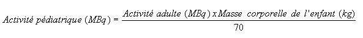
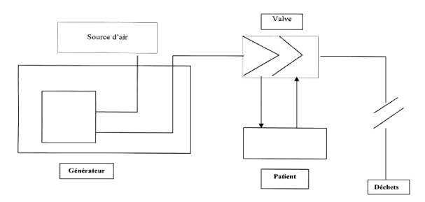

RÉSUMÉ DES CARACTÉRISTIQUES DU PRODUIT
ANSM - Mis à jour le : 28/05/2014
KRYPTOSCAN, générateur de rubidium (81 Rb)/ krypton (81m Kr) pour l'élution par l'air
2. COMPOSITION QUALITATIVE ET QUANTITATIVE
Le rubidium (81Rb) est fixé sur une résine de polytétrafluoroéthylène échangeuse d'ions où il est en équilibre avec son nucléide fils, le (81mKr), ce qui permet de générer du krypton (81mKr) sous forme gazeuse.
Les activités disponibles sont les suivantes: 75 MBq, 110 MBq, 150 MBq, 185 MBq, 220 MBq, 260 MBq, 300 MBq, 335 MBq, 370 MBq, 440 MBq, 520 MBq, 590 MBq, 670 MBq et 740 MBq.
Résumé des caractéristiques physiques de l'isotope radioactif: Kr-81m.
Le rubidium-81 décroît avec une période de 4,58 heures, en générant le krypton-81m, de période particulièrement courte: 13 secondes.
Le Krypton-81m décroît par transition isomérique en krypton-81, en émettant un rayonnement gamma pur de 0,190 MeV. Le krypton-81 décroît par capture électronique avec une période de 2,1 x 105 années.
Pour la liste complète des excipients, voir rubrique 6.1.
Générateur de radionucléide.
4.1. Indications thérapeutiques
Ce médicament est à usage diagnostique uniquement.
Etude de la ventilation pulmonaire.
En raison des faibles doses de radiation délivrées, ce produit est particulièrement indiqué pour les examens pratiqués en pédiatrie.
Combinée avec la scintigraphie pulmonaire de perfusion, la scintigraphie au krypton-81m est utilisée dans le diagnostic des embolies pulmonaires.
Ces études couplées de ventilation (81mKr) et de perfusion (au moyen de macro-agrégats marqués au (99mTc)) sont possibles grâce à la différence d'énergie des rayonnements gamma émis par (81mKr) et (99mTc).
4.2. Posologie et mode d'administration
Le krypton est élué du générateur au moyen d'air humidifié et est administré au patient à l'aide d'un masque respiratoire.
Les images s'obtiennent durant l'inhalation continue du krypton-81m.
En règle générale, l'acquisition de 200 000 à 350 000 coups par la gamma caméra est nécessaire pour obtenir une image satisfaisante. Ceci correspond à l'inhalation d'une activité totale d'environ 18 MBq/kg de masse corporelle. La plupart des examens demandent de 4 à 6 incidences différentes.
Chez l'enfant, l'activité inhalée est calculée en fonction de l'équation suivante:

L'inhalation continue est interrompue lorsque la gamma caméra a enregistré environ 300 000 coups par image.
Aucune connue à ce jour.
4.4. Mises en garde spéciales et précautions d'emploi
Ce produit est un médicament radiopharmaceutique.
Les médicaments radiopharmaceutiques ne peuvent être manipulés que par des personnes qualifiées ayant reçu des autorités compétentes l'autorisation d'utilisation des radioéléments. La réception, l'utilisation et l'administration des radiopharmaceutiques ne peuvent être effectuées que par des personnes autorisées dans des locaux spécialement équipés et habilités. La réception, le stockage, l'utilisation, le transfert et l'élimination sont soumis à la réglementation en vigueur et aux autorisations appropriées des autorités nationales ou locales compétentes.
La préparation d'un médicament radiopharmaceutique doit tenir compte des principes de radioprotection et de qualité pharmaceutique. Les précautions appropriées d'asepsie doivent être prises afin de satisfaire aux exigences de Bonnes Pratiques de Fabrication pharmaceutique.
4.5. Interactions avec d'autres médicaments et autres formes d'interactions
Le diazepam à dose sédative et les anesthésiques généraux peuvent affecter la distribution pulmonaire du gaz radioactif, en augmentant légèrement l'activité au niveau de la partie apicale du poumon et en réduisant l'accumulation au niveau de la base.
Lorsqu'il est nécessaire d'administrer un produit radioactif à des femmes en âge de procréer, il est indispensable de s'informer sur toute suspicion de grossesse. Toute femme n'ayant pas eu ses règles doit être considérée comme enceinte jusqu'à preuve du contraire. Dans le doute, il est important que l'irradiation soit réduite au minimum pour obtenir les informations cliniques souhaitées. D'autres techniques n'impliquant pas l'emploi des radiations ionisantes doivent être envisagées.
Les examens faisant appel aux radionucléides effectués chez les femmes enceintes entraînent une certaine dose de radiation pour le fœtus. Ils ne seront donc réalisés pendant la grossesse que pour des raisons impératives et après avoir évalué les bénéfices attendus par rapport aux risques encourus par la mère et le fœtus.
Avant d'administrer un radiopharmaceutique à une femme en période d'allaitement, il faut envisager la possibilité de retarder l'examen jusqu'à la fin de l'allaitement, ou de choisir un autre produit radiopharmaceutique plus approprié, compte-tenu de l'éventuelle présence de radioactivité dans le lait.
Si en période d'allaitement, l'administration du gaz krypton-81m s'avère indispensable, il n'est pas cependant nécessaire d'interrompre l'allaitement.
4.7. Effets sur l'aptitude à conduire des véhicules et à utiliser des machines
Aucun effet connu à ce jour.
Pour tout patient, l'exposition aux radiations ionisantes doit être justifiée par le bénéfice diagnostique attendu.
La radioactivité administrée doit être telle que l'irradiation qui en découle soit aussi faible que possible en gardant à l'esprit la nécessité d'obtenir le diagnostic requis.
L'exposition aux radiations ionisantes peut potentiellement induire des cancers ou développer des tares héréditaires. Les examens de médecine nucléaire effectués à des fins de diagnostic utilisent des activités tellement réduites que la possibilité de provoquer ces effets indésirables est extrêmement faible.
Pour la plupart des examens de médecine nucléaire, la dose de radiation délivrée (Dose Efficace) est inférieure à 20 mSv. Des doses plus fortes peuvent être justifiées dans certaines circonstances cliniques.
Aucun effet indésirable n'a été observé après administration de ce produit.
Dans le cas exceptionnel d'une exposition prolongée aux radiations, liée à l'inhalation de gaz durant une longue période, l'épuration rapide des poumons se fait en écartant le patient de la source de krypton-81m et en lui permettant de respirer de l'air frais non contaminé.
5. PROPRIETES PHARMACOLOGIQUES
5.1. Propriétés pharmacodynamiques
Classe pharmacothérapeutique: Produit radiopharmaceutique à usage diagnostique,
Code ATC: V09EX01.
Le krypton est un gaz inerte, non métabolisé et qui ne peut pas avoir d'activité pharmacologique aux concentrations administrées.
5.2. Propriétés pharmacocinétiques
Le krypton-81m est un gaz inerte de très courte période. En raison de sa décroissance rapide, la période effective est égale à la période physique de 13 secondes. A la fin de l'inhalation, le krypton-81m, passé dans le sang, est exhalé lors du premier passage.
5.3. Données de sécurité préclinique
Aucune donnée n'est disponible.
Non applicable. Le gaz Krypton-81m est administré au patient après mélange à l'air ambiant.
Aucune connue à ce jour.
44 heures à compter de l'heure de fabrication.
6.4. Précautions particulières de conservation
Le générateur doit être conservé à température ambiante (15-25 C) dans une protection de tungstène.
Le stockage doit être conforme à la réglementation nationale en vigueur pour le matériel radioactif.
6.5. Nature et contenu de l'emballage extérieur
Le générateur comporte une membrane de polymère PTFE fixant une résine échangeuse d'ions entourée d'une protection de tungstène. La membrane est fixée dans une boîte en matière plastique. Le générateur est emballé dans une boîte métallique hermétiquement dose et étiqueté selon les recommandations en vigueur.
6.6. Précautions particulières d’élimination et de manipulation
Tout produit non utilisé ou déchet doit être éliminé conformément à la réglementation en vigueur.
7. TITULAIRE DE L’AUTORISATION DE MISE SUR LE MARCHE
27-43 rue du Colonel Avia
75015 PARIS
8. NUMERO(S) D’AUTORISATION DE MISE SUR LE MARCHE
· 559 968-0: 75 MBq à 740 MBq par générateur.
9. DATE DE PREMIERE AUTORISATION/DE RENOUVELLEMENT DE L’AUTORISATION
[à compléter par le titulaire]
10. DATE DE MISE A JOUR DU TEXTE
[à compléter par le titulaire]
Les données reprises dans la publication 53 de la CIPR "Radiation dose to patients from radiopharmaceuticals" sont rapportées ci-dessous.
|
|
Dose absorbée par unité d'activité administrée (en mGy/MBq) |
||||
|
ORGANES |
Adulte |
15 ans |
10 ans |
5 ans |
1 an |
|
Surrénales |
3,4E-06 |
5,7E-06 |
8,3E-06 |
1,3E-05 |
2,1E-05 |
|
Paroi vésicale |
6,8E-08 |
7,6E-08 |
2,0E-07 |
4,7E-07 |
1,2E-06 |
|
Surfaces osseuses |
1,7E-06 |
2,2E-06 |
3,2E-06 |
4,8E-06 |
9,3E-36 |
|
Seins |
4,6E-06 |
4,6E-06 |
8,9E-06 |
1,3E-05 |
1,8E-05 |
|
Tube digestif |
|
||||
|
Paroi de l'estomac |
2,5E-06 |
3,2E-06 |
4,4E-06 |
6,7E-06 |
1,1E-05 |
|
Intestin grêle |
2,7E-07 |
4,7E-07 |
8,6E-07 |
1,6E-06 |
3,4E-06 |
|
Paroi du côlon ascendant |
3,2E-07 |
5,5E-07 |
1,2E-06 |
1,9E-06 |
3,5E-06 |
|
Paroi du côlon descendant |
1,4E-07 |
1,5E-07 |
3,0E-07 |
8,0E-07 |
2,0E-06 |
|
Reins |
1,2E-06 |
1,9E-06 |
2,9E-06 |
4,5E-06 |
8,4E-06 |
|
Foie |
3,4E-06 |
4,8E-06 |
6,6E-06 |
9,5E-06 |
1,6E-05 |
|
Poumons |
2,1E-04 |
3,1E-04 |
4,4E-04 |
6,8E-04 |
1,3E-03 |
|
Ovaires |
1,7E-07 |
1,7E-07 |
4,1E-07 |
8,0E-07 |
1,9E-06 |
|
Pancréas |
3,5E-06 |
4,4E-06 |
6,4E-06 |
9,8E-06 |
1,8E-05 |
|
Moelle osseuse |
2,1E-06 |
3,3E-06 |
4,2E-06 |
5,3E-06 |
8,2E-06 |
|
Rate |
3,1E-06 |
4,1E-06 |
6,0E-06 |
9,2E-06 |
1,6E-05 |
|
Testicules |
1,7E-08 |
2,3E-08 |
7,4E-08 |
1,3E-08 |
5,6E-07 |
|
Thyroïde |
1,2E-06 |
2,1E-06 |
3,7E-06 |
6,0E-06 |
1,1E-05 |
|
Utérus |
1,3E-07 |
1,8E-07 |
3,5E-07 |
7,2E-07 |
1,8E-06 |
|
Autres tissus |
1,8E-06 |
2,3E-06 |
3,2E-06 |
4,7E-06 |
8,5E-06 |
|
Dose Efficace (mSv/MBq) |
2,7E-05 |
4,0E-05 |
5,7E-05 |
8,8E-05 |
1,7E-04 |
Pour le krypton-81m, la Dose Efficace résultant de l'administration d'activités comprises entre 3000 à 9000 MBq (gamme d'exposition réelle correspondant aux activités administrées chez l'adulte) varie de 0,08 à 0,24 mSv.
En raison des périodes différentes, la quantité de krypton-81 est de l'ordre de 2 µBq/MBq de krypton-81m. La contribution du krypton-81 au risque d'irradiation total du patient doit être considérée comme négligeable.
12. INSTRUCTIONS POUR LA PREPARATION DES RADIOPHARMACEUTIQUES
Mode d'emploi (le chariot spécialement adapté étant installé au préalable)
Préparation de l'élution:
1. Retirer le générateur de Krypton (81mKr) de son emballage de transport,
2. Coucher le générateur sur une surface horizontale et enlever le bouchon obturateur bleu de sa base.
Conserver le bouchon obturateur et placer le dans le compartiment qui lui est réservé au niveau de l'emballage de transport,
3. Placer le générateur dans le compartiment plombé du chariot en le faisant glisser le long des guides d'installation,
4. Refermer le couvercle du chariot,
5. Prendre le tuyau interne de la tubulure de ventilation permettant la fourniture de Krypton et connectez-la avec le chariot de Krypton,
6. Connecter l'autre partie de ce tuyau interne au masque,
7. Brancher la prise,
8. Régler le flux d'air au volume maximal.
Administration
1. Placer le patient sous une gamma-caméra (équipée d'un collimateur adapté au 99mTc),
2. Placer le masque d'inhalation sur le visage du patient et s'assurer qu'il n'y a pas de fuite,
3. Brancher la prise et mettre l'appareil sous tension manuellement ou par l'intermédiaire de la télécommande,
4. Commencer l'acquisition de l'image et continuer jusqu'à ce que le nombre de coups nécessaire soit atteint (200 000 à 350 000 coups/image).
5. Eteindre l'appareil.
Diagramme de fonctionnement

Traitement des générateurs après usage
1. Remettre en place la protection de plastique que vous avez retirée précédemment,
2. Conserver le générateur dans une pièce prévue à cet effet, pour décroissance, jusqu'à ce que son activité en autorise le transport de retour,
3. Préparer le générateur pour le transport de retour en tenant compte de la procédure de retour indiqué par le laboratoire Mallinckrodt lors de la livraison.
L'administration de produit radiopharmaceutique présente des risques pour l'entourage du patient en raison de l'irradiation externe ou de la contamination par inhalation. Par conséquent, il faut prendre des mesures de protection contre les radiations conformément aux réglementations nationales.
L'élimination des déchets radioactifs doit se faire en accord avec les réglementations nationales et internationales.
Liste I.
Prescription réservée à l'usage hospitalier.
Les produits radiopharmaceutiques ne doivent être utilisés que par des personnes qualifiées. Ils ne peuvent être délivrés qu'à des praticiens ayant obtenu l'autorisation spéciale prévue à l'article R. 1333-24 de la Santé Publique.